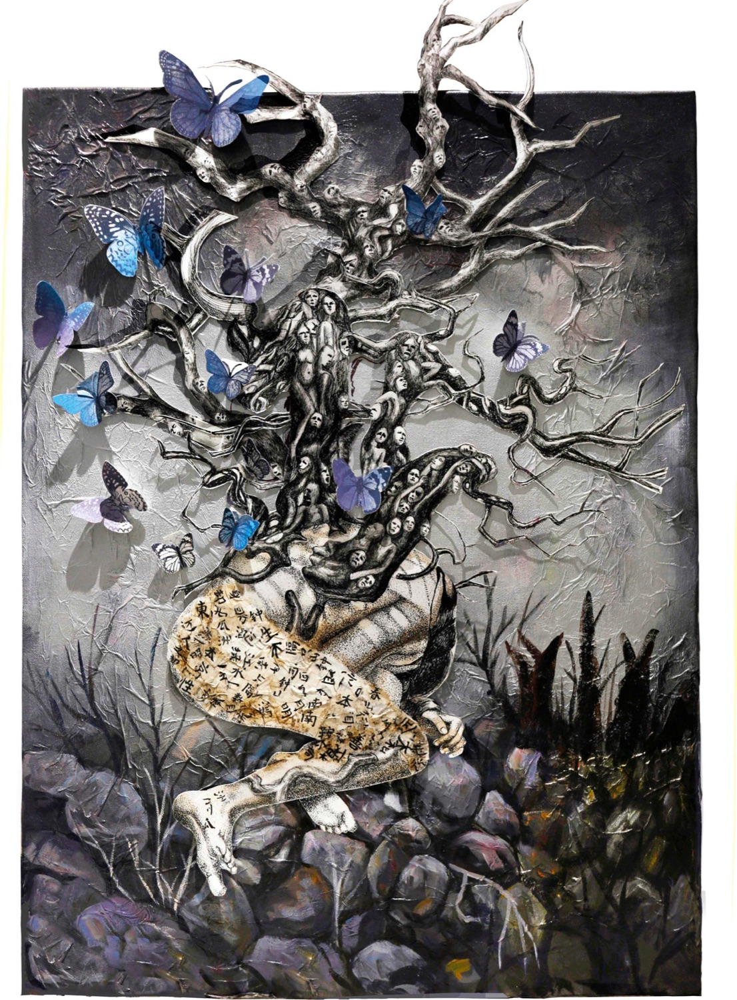
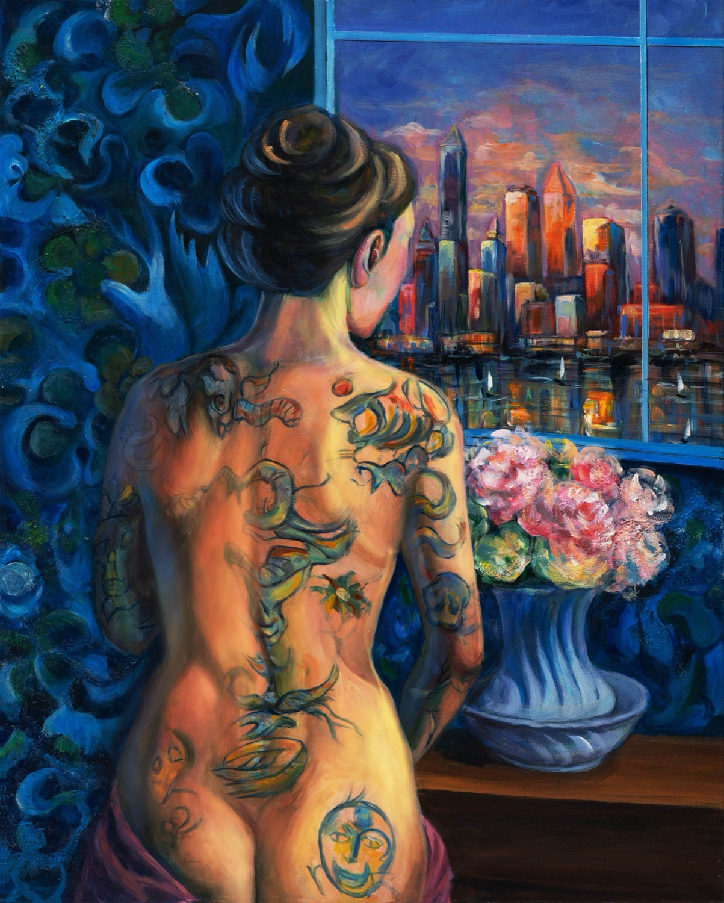
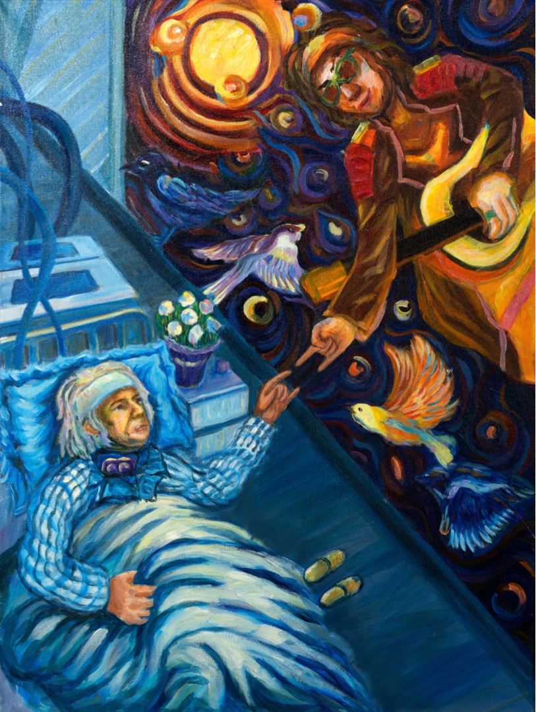
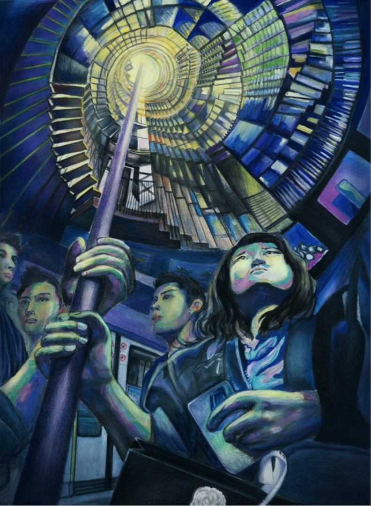
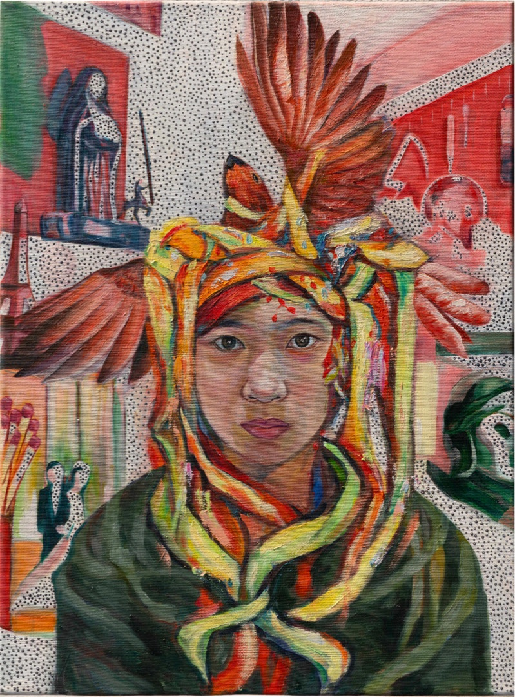
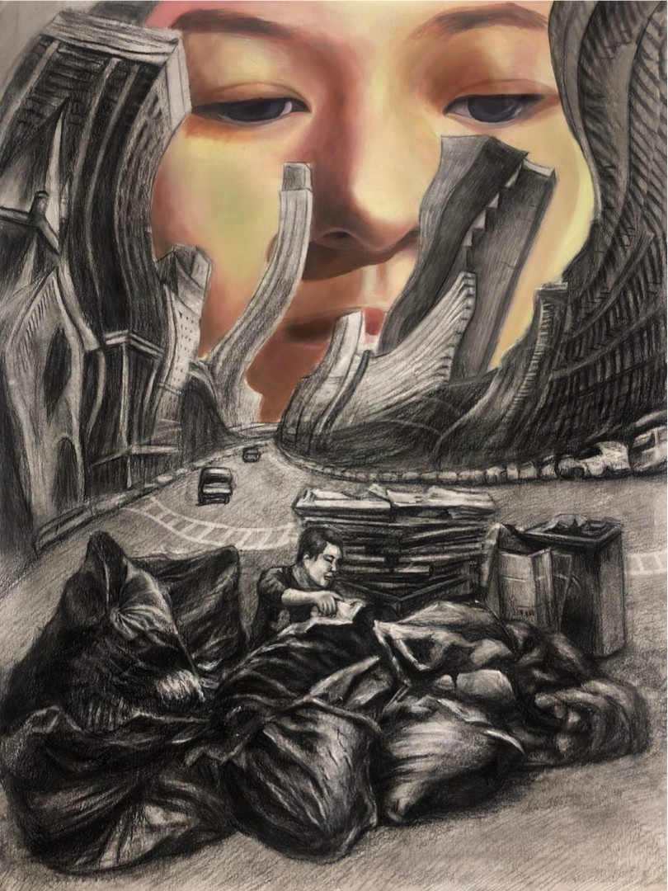
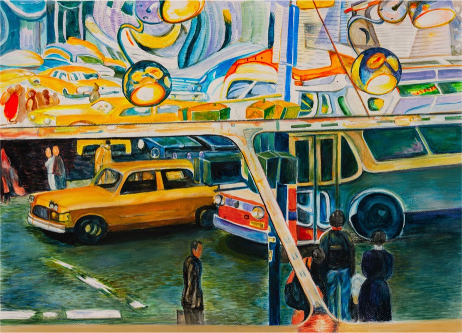
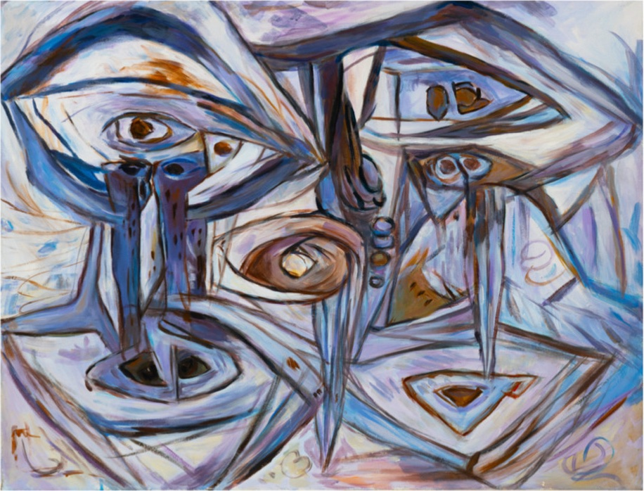
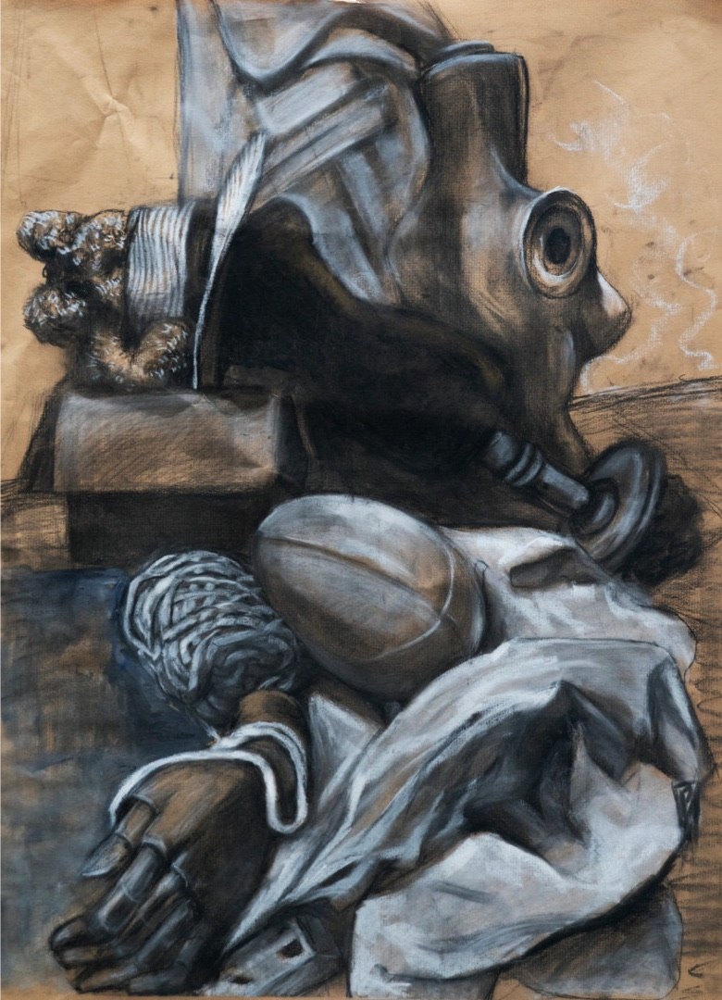
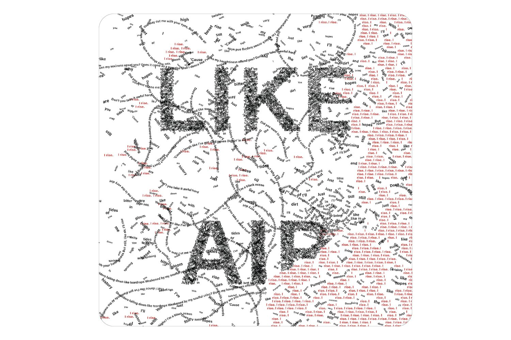

Art & Painting
Paintings and drawings about identity, the city and time — figures and symbols that each carry a story, in acrylic, watercolor, charcoal and mixed media.
- Media
- Acrylic, oil, watercolor, color pencil, charcoal, mixed media
- Largest
- 800 × 1000 mm

The Spirit of Man
Acrylic on canvas, tissue paper, pen and ink on paper, spray paint · 600 × 850 mm
A tree of anguished faces grows from a woman whose body is marked with lines from the Tao Te Ching. She stands for the generations who drove — and suffered for — China’s civil awakening. The butterflies come from the saying “come out of the cocoon”: the shell stays broken, but the spirit carries on.

Man, and Nature
Acrylic on canvas with crackle gel · 800 × 1000 mm
In a new city it is easy to lose yourself trying to blend in. The flowers carry her love of nature against the artificial skyline; the ink on her back is her fight to keep her identity and culture in a place that pushes everyone to conform.

A Long-Gone Dream
Acrylic on canvas · 600 × 800 mm
An old man in a hospital bed reaches for his younger self, still playing music in a dream. Birds connect the two worlds, but their fingers never touch: time does not rewind, and the dream he gave up to conform stays just out of reach.

The Endless Cycle
Watercolor and color pencil · 570 × 430 mm
Young workers grip a handrail that climbs toward the light — the promise that hard work leads to the top. The woman’s worried face asks whether, for people who start at the bottom, it ever does.

Self-Portrait
Acrylic on canvas · 500 × 600 mm
A bird flies upward but is bound to my head by bright stripes — my faltering pursuit of success on the way to college. Around me sit love, faith, study and home: every path I could take, and the fear of choosing the wrong one.

Two Dimensions of Reality
Charcoal and oil paint on paper · 465 × 615 mm
Charcoal merges a man and the garbage bags he sorts into one shape; above, in oil, a girl looks down on the bending city without noticing him. A piece about seeing people only by their function.

Distorted Changes
Watercolor and color pencil on paper · 540 × 390 mm
Below, an ordinary street that feels mundane. Above, the same city morphing into something no one recognizes — a reminder to look up and appreciate a world that keeps changing.

Two Young Lady
Acrylic on canvas · 700 × 900 mm
An abstract of my sister and me, surrounded by eyes that stare out of the frame. Made while I was being warned away from a sensitive subject, it holds the fear of being watched and of losing control over my own work.

Still Life
Charcoal on toned paper
A study of form, fabric and light.
Next project
Still I Rise
A triptych type poster that grows like vines
